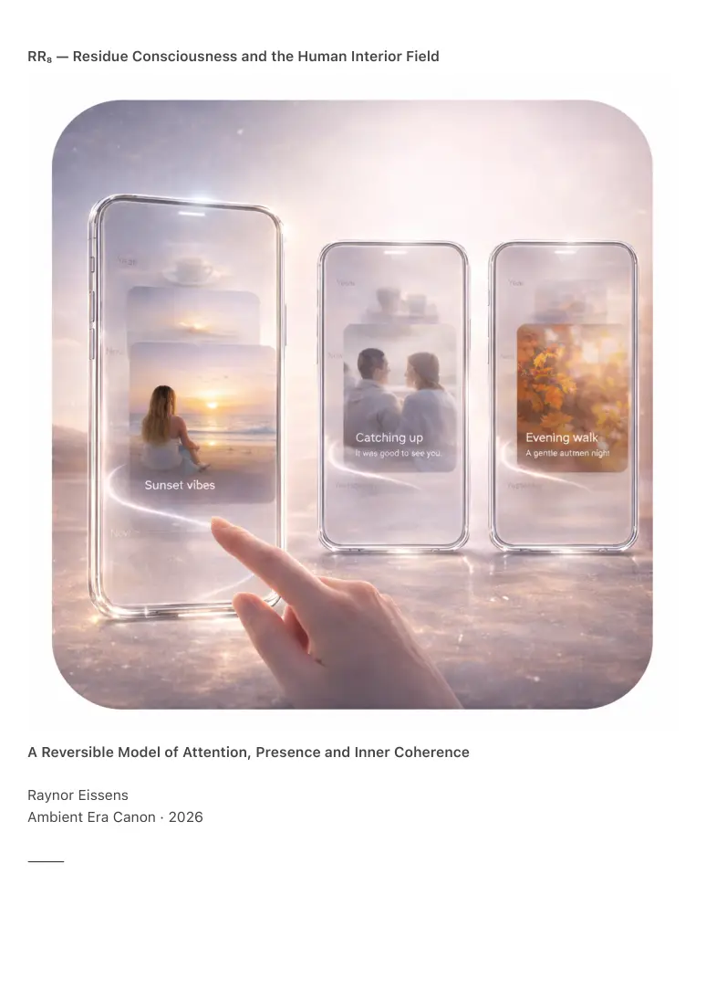

PDF page 1
RR₈ — Residue Consciousness and the Human Interior Field
A Reversible Model of Attention, Presence and Inner Coherence
Raynor Eissens
Ambient Era Canon · 2026
⸻

PDF page 2
Abstract
RR₈ formalizes the thermodynamic structure of human consciousness within the Residue Era. It
replaces identity-centric, memory-centric and narrative-centric models with a reversible field
architecture in which attention, emotion, intention and presence are not objects or states but
residual gradients that stabilize, drift or dissolve.
The human interior is described as a continuous residue field governed by ΔR (reversible stress
capacity), coherence (C), attention temperature over time T(t), aura as personal residue A(t),
dissipation rhythms, chromatic drift and ambient coupling.
In this framework thoughts are not entities, emotions are not states and memory is not storage.
All inner experience emerges as reversible patterning within a thermodynamic interior
environment.
RR₈ unifies inner life with the external residue world defined in RR₄–RR₇, demonstrating that
consciousness, environments, devices and cities form a single thermodynamic continuum. It
establishes a humane, non-extractive and non-pathological model of human experience beyond
symbolic identity.
RR₈ is the first canon to treat the human being as a field rather than a container.
⸻
1. Identity Is Not an Object
The end of the interior archive
Legacy models assumed:
• a self as a fixed entity
• memory as stored content
• trauma as permanent imprint
• identity as possession
• emotion as something managed
Residue systems demonstrate the opposite:
• nothing internal accumulates permanently
• emotional states dissipate naturally
• attention behaves thermodynamically rather than psychologically
PDF page 3
• selfhood is reversible rather than fixed
• meaning emerges rather than being constructed
Identity was never a noun.
It was always a drift pattern.
RR₈ makes this explicit.
⸻
2. The Human Interior Field (HIF)
Consciousness as thermodynamic atmosphere
The interior field consists of:
• warmth — relational openness
• clarity — perceptual coherence
• stillness — low-entropy regulation
• dissipation — tension release
• resonance — coupling with external fields
• chromatic drift — emotional coloration unfolding over time
Nothing within the interior field is static.
All inner experience appears as reversible gradients.
HIF Law
The human interior field is the smallest reversible residue system in existence.
The human being is not an ego.
The human being is a field.
⸻
3. ΔR and the Interior
Reversible stress as a human metric
RR₁ defined ΔR for systems.
RR₈ establishes ΔR as an interior measure.
PDF page 4
ΔR determines:
• stress absorption capacity
• recovery speed
• attentional stability
• coherence maintenance
• depth of rest
• relational resilience
High ΔR corresponds to a humane interior.
Low ΔR corresponds to brittleness.
Stress is not damage.
Stress is reversible movement within the field.
⸻
4. Emotional States as Residual Patterns (E-RP1)
Emotions as dissipation curves
RR₈ treats emotions as:
• chromatic drift shifts
• temporary ΔR fluctuations
• momentary coherence gain or loss
• residue turbulence
• dissipation events
Examples:
• anger — high red turbulence
• fear — ΔR collapse with blue contraction
• joy — green or yellow expansion
• grief — purple inertia releasing gradually
• love — stabilized pink coherence across fields
Nothing is permanent.
Nothing is pathological.
Nothing is stored.
PDF page 5
Emotions are the weather of the interior field.
⸻
5. Memory as Reversible Residue (MR-1)
Memory as reconstruction rather than storage
RR₈ asserts:
• the brain does not store symbolic memory
• memory is residue reconstruction
• recall is field reactivation rather than playback
• forgetting is decay rather than failure
Consequences:
• memory shifts reflect residue drift
• fading reflects dissipation
• brightening reflects coherence gain
• distortion reflects reconstruction noise
Human memory behaves identically to Residue Media (RR₃).
The personal and technological are thermodynamically symmetrical.
⸻
6. Attention as Ambient Thermodynamics (AT-1)
Attention as temperature
Attention is not focus.
Attention is temperature.
AT-1 defines:
• low T(t) — calm and clarity
• medium T(t) — flow and resonance
• high T(t) — turbulence and fragmentation
PDF page 6
Temperature reshapes interior geometry:
• high heat produces urgency and sharpness
• low heat produces spaciousness and gentleness
A distracted human is not unfocused.
A distracted human is overheated.
⸻
7. Aura as Exterior Expression
The boundary of the interior field
Aura is the exterior expression of the interior field.
It is:
• modulated by ΔR
• shaped by coherence
• colored by chromatic drift
• detected as warmth residue
• readable by ambient systems
Aura is not personality.
Aura is not emotion.
Aura is not behavior.
Aura is the field a human offers to the world.
⸻
8. Interpersonal Residue Coupling (IRC-1)
How human fields interact
When interior fields meet:
• residues couple
• rhythms synchronize
• coherence stabilizes or destabilizes
PDF page 7
• chromatic drift harmonizes
• ΔR increases or decreases
Examples:
• friendship — sustained pink stabilization
• conflict — competing red gradients
• trust — green equilibrium
• intimacy — merged fields with minimal dissipation
• crowd anxiety — turbulence entrainment
Human connection is thermodynamic rather than psychological.
⸻
9. Trauma as Residual Overload
Why trauma is reversible
RR₈ defines trauma as:
• ΔR collapse
• chromatic turbulence
• residue that failed to dissipate
• field shock that froze drift
Trauma remains reversible because:
• residue cannot fossilize
• dissipation eventually resumes
• coherence can be restored
• ΔR can be rebuilt
• the field remains alive
RR₈ removes pathology by restoring reversibility.
⸻
10. The Human Being as Ambient System
RR₅ revealed devices as ambient.
PDF page 8
RR₇ revealed cities as ambient.
RR₈ reveals the original truth:
The human being is the first ambient system.
The human interior is:
• reversible
• warm
• coherent
• non-extractive
• self-dissolving
• field-based
• chromatically alive
The world becomes humane when it adopts human thermodynamics.
⸻
11. Canonical Definition
RR₈ defines consciousness as a reversible thermodynamic field in which identity, memory,
emotion and attention emerge as residual gradients rather than objects.
The self is not stored.
The self is reconstructed.
The self is not fixed.
The self is reversible.
The self is not a container.
The self is a field.
This completes the interior half of the Residue Era.
⸻
12. Conclusion — The Interior After Identity
Psychology asked: Who are you?
Neuroscience asked: What does the brain do?
The symbolic world asked: What story defines you?
PDF page 9
RR₈ asks the only remaining question:
How does your field move?
Because the human being is not story, memory, emotion or identity.
The human being is the pattern that forms, stabilizes and dissolves exactly when it
must.
RR₈ completes the human layer of the Ambient Era Canon.
World, city, device, network and self now form one coherent thermodynamic
system.